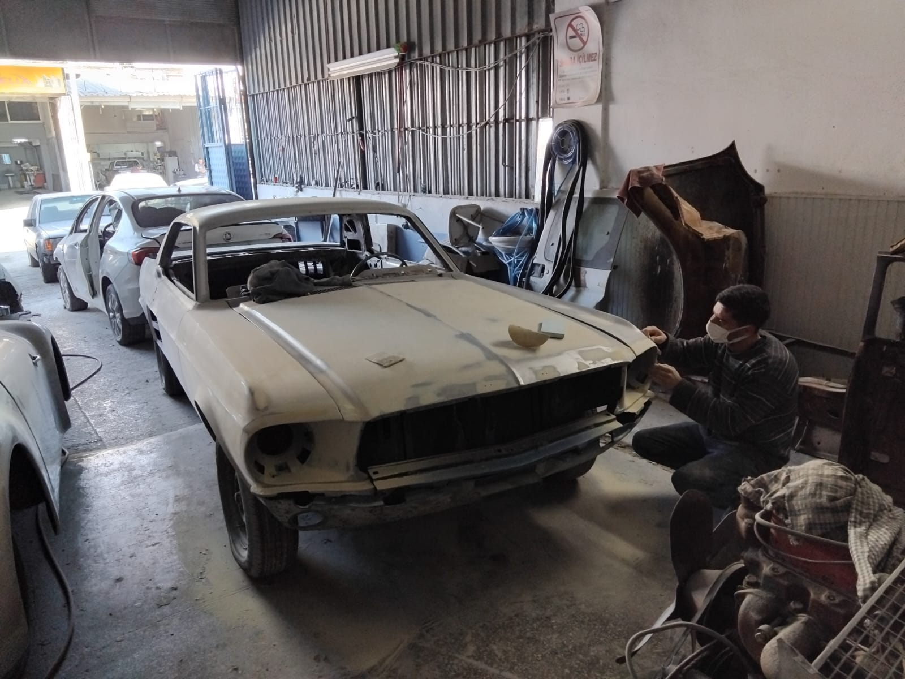

Muratpasa'nin Güvenilir Adresi
Muratpasa'nin yogun sehir trafiginde meydana gelen ufak çiziklerden büyük kaza hasarlarina kadar, NeTT ekibi olarak aracinizi ilk günkü ihtisamina kavusturuyoruz. Akdeniz Sanayi Sitesi'ndeki modern tesisimizde, en yeni teknolojileri kullanarak kusursuz isçilik sunuyoruz.
ÖÖzellikle park hasarlari ve sürtmelerden kaynaklanan boya bozulmalarini, mikron hassasiyetinde lokal boya teknikleriyle onariyoruz. Bu sayede aracinizin orijinalligini maksimum düzeyde koruyor, deger kaybini minimuma indiriyoruz.
Neden Muratpasa Müsterileri Bizi Seçiyor?
- Hizli Ekspertiz: Fotografla veya yerinde ücretsiz ve hizli fiyat teklifi.
- Titiz Süreç Yönetimi: Onarımın her asamasinda seffaf dosya ve süreç takibi.
- Firinli Boya Kabini: Italyan sistemli, tozsuz ve garantili uygulama.
- Dijital Renk Eslestirme: Spektrofotometre ile %100 orijinal ton uyumu.
- Orijinal Malzeme: PPG, Standox gibi dünya markasi boya ve vernikler.
Muratpasa'dan Akdeniz Sanayi'ye Kolay Ulasim
Muratpasa merkez ve çevre mahallelerinden atölyemize ulasmak çok kolay. Araç teslim hizmetimizle aracinizi siz birakmadan da islem baslatabilirsiniz. Çalisma saatleri: Pazartesi – Cumartesi, 08:30 – 19:00.

.jpeg)
MURATPASA'DAN TEKLIF ALIN
Araçcinizin fotoğrafini gönderin, 15 dakikada fiyat belirleyelim.